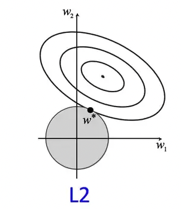
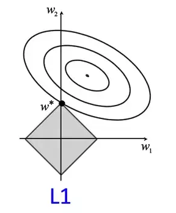

October 12, 2024
Regularization is the process of modifying a learning algorithm to reduce generalization error, i.e., error on unseen test data. It prevents overfitting by increasing model bias and reducing variance. This will always hurt the training error, but we accept this compromise to achieve better generalization on unseen test data.
Above figure shows a model in which training loss gradually decreases, but validation loss eventually goes up. In other words, this generalization curve shows that the model is overfitting to the data in the training set. So, instead of minimizing just the loss of the model, with minimize(Loss(Data|Model_Parameters)), we will now minimize loss+complexity i.e. minimize(Loss(Data|Model)) + complexity (model).
Our training optimization algorithm which only consisted of loss term, is now a function of two terms: the (old) loss term, which measures how well the model fits the data, and the regularization term, which measures model complexity. Model complexity can be viewed as a function of weights of all the features in the model or the total number of non-zero weight features in the model. There are two methods to quantify these views.
Let \( J \) be the objective function (loss), \( \theta \) be the model parameters, \( X \) and \( y \) be the input-output pair, and \( \Omega (\theta) \) be the parameter norm introduced as a penalty. The modified regularized objective function is given by:
\[ J'(\theta; X,y) = J(\theta; X,y) + \alpha \Omega (\theta) \]where \( \alpha \) is the regularization parameter, controlling the strength of regularization.
Also known as Ridge regression or Tikhonov regularization, L2 regularization defines the penalty as:
\[ \Omega (\theta) = \frac{1}{2} ||w||_2^2 \]The regularized loss function becomes:
\[ J'(\theta; X,y) = J(\theta; X,y) + \frac{\alpha}{2} ||w||_2^2 \]The gradient update rule is:
\[ w = w(1 - \epsilon \alpha) - \epsilon \nabla_w J(\theta; X,y) \]This shows that at every iteration, the weight is shrunk by a constant factor.
In L2 regularization, model complexity can be viewed as a function of the sum of squared feature weights in the model. Hence, models with large weights are considered more complex. The goal of L2 regularization is to reduce the magnitude of weights, encouraging smaller but nonzero values, leading to a smoother model that is less sensitive to noise. Unlike L1 regularization, L2 does not enforce sparsity but instead distributes weight values more evenly across features.
Consider a squared error loss function for a network with two dimensional weight vectors w; w1 and w2. The regularization term is constrained by the value of \(\alpha\). So, \(w1^2+w2^2\) can be expressed as a circle with radius \(\alpha\). The squared loss is plotted as a contour plot where the center is the minimal loss without regularization. In a sense, the unregularized contour is overfitting the training data. So, the goal of solving the objective function with L2 regularization is finding a point where the loss of the contour is minimum and it lies within the circle of regularizer. In the figure, \(w\) is the point. This is not equal to zero but close to it. If we increase the size of \(\alpha\), the size of the circle also increases and the model will be regularized more.
L1 regularization, also known as Lasso regression, penalizes the absolute sum of weights:
\[ \Omega (\theta) = ||w||_1 \]The regularized loss function becomes:
\[ J'(\theta; X,y) = J(\theta; X,y) + \alpha ||w||_1 \]The gradient update rule is:
\[ w = w - \epsilon \alpha sign(w) - \nabla_w J(\theta; X,y) \] In L1 regularization, model complexity is viewed as a function of the total number of features with nonzero weights. The goal is to drive some weights to zero, effectively selecting the most important features and producing a sparse parameter representation. This sparsity property makes L1 regularization useful for feature selection.
L1 regularization finds the optimal weight values by minimizing the loss within the unit norm ball of an L1 norm, represented as a square (or diamond) due to the four different constraint lines derived from the L1 regularizer equation.
L0 regularization aggressively introduces sparsity by removing features based on a threshold count of non-zero parameters. Unlike L1 and L2, L0 regularization is neither convex nor differentiable, making it computationally difficult to optimize.